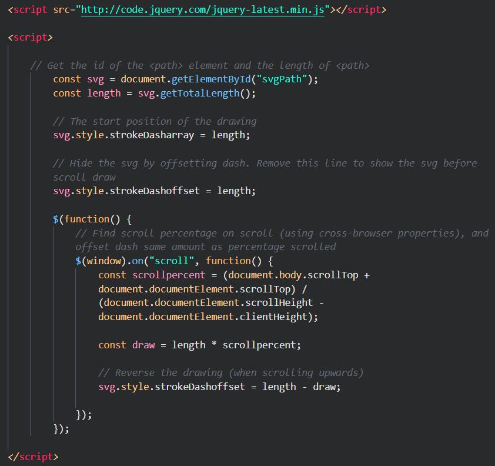

SVG Scrolling Animations
What is it?
How to use?
Why use?
Step 1: Get your SVG
Font Awesome
The Noun Project
Illustrator
Step 2: Create HTML, CSS, and JavaScript skeleton
Step 3: Load the jQuery DrawSVG plugin
Plugin Link
Step 4: Apply your styles
Step 5: Write your scripts
